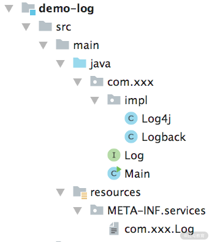
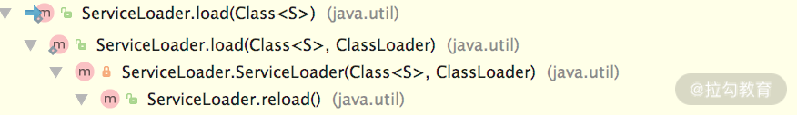
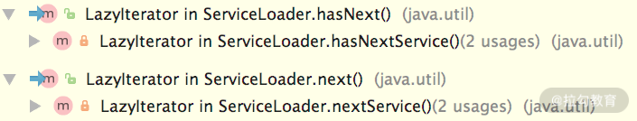

- 00 开篇词 深入掌握 Dubbo 原理与实现，提升你的职场竞争力.md.html
- 01 Dubbo 源码环境搭建：千里之行，始于足下.md.html
- 02 Dubbo 的配置总线：抓住 URL，就理解了半个 Dubbo.md.html
- 03 Dubbo SPI 精析，接口实现两极反转（上）.md.html
- 04 Dubbo SPI 精析，接口实现两极反转（下）.md.html
- 05 海量定时任务，一个时间轮搞定.md.html
- 06 ZooKeeper 与 Curator，求你别用 ZkClient 了（上）.md.html
- 07 ZooKeeper 与 Curator，求你别用 ZkClient 了（下）.md.html
- 08 代理模式与常见实现.md.html
- 09 Netty 入门，用它做网络编程都说好（上）.md.html
- 10 Netty 入门，用它做网络编程都说好（下）.md.html
- 11 简易版 RPC 框架实现（上）.md.html
- 12 简易版 RPC 框架实现（下）.md.html
- 13 本地缓存：降低 ZooKeeper 压力的一个常用手段.md.html
- 14 重试机制是网络操作的基本保证.md.html
- 15 ZooKeeper 注册中心实现，官方推荐注册中心实践.md.html
- 16 Dubbo Serialize 层：多种序列化算法，总有一款适合你.md.html
- 17 Dubbo Remoting 层核心接口分析：这居然是一套兼容所有 NIO 框架的设计？.md.html
- 18 Buffer 缓冲区：我们不生产数据，我们只是数据的搬运工.md.html
- 19 Transporter 层核心实现：编解码与线程模型一文打尽（上）.md.html
- 20 Transporter 层核心实现：编解码与线程模型一文打尽（下）.md.html
- 21 Exchange 层剖析：彻底搞懂 Request-Response 模型（上）.md.html
- 22 Exchange 层剖析：彻底搞懂 Request-Response 模型（下）.md.html
- 23 核心接口介绍，RPC 层骨架梳理.md.html
- 24 从 Protocol 起手，看服务暴露和服务引用的全流程（上）.md.html
- 25 从 Protocol 起手，看服务暴露和服务引用的全流程（下）.md.html
- 26 加餐：直击 Dubbo “心脏”，带你一起探秘 Invoker（上）.md.html
- 27 加餐：直击 Dubbo “心脏”，带你一起探秘 Invoker（下）.md.html
- 28 复杂问题简单化，代理帮你隐藏了多少底层细节？.md.html
- 29 加餐：HTTP 协议 + JSON-RPC，Dubbo 跨语言就是如此简单.md.html
- 30 Filter 接口，扩展 Dubbo 框架的常用手段指北.md.html
- 31 加餐：深潜 Directory 实现，探秘服务目录玄机.md.html
- 32 路由机制：请求到底怎么走，它说了算（上）.md.html
- 33 路由机制：请求到底怎么走，它说了算（下）.md.html
- 34 加餐：初探 Dubbo 动态配置的那些事儿.md.html
- 35 负载均衡：公平公正物尽其用的负载均衡策略，这里都有（上）.md.html
- 36 负载均衡：公平公正物尽其用的负载均衡策略，这里都有（下）.md.html
- 37 集群容错：一个好汉三个帮（上）.md.html
- 38 集群容错：一个好汉三个帮（下）.md.html
- 39 加餐：多个返回值不用怕，Merger 合并器来帮忙.md.html
- 40 加餐：模拟远程调用，Mock 机制帮你搞定.md.html
- 41 加餐：一键通关服务发布全流程.md.html
- 42 加餐：服务引用流程全解析.md.html
- 43 服务自省设计方案：新版本新方案.md.html
- 44 元数据方案深度剖析，如何避免注册中心数据量膨胀？.md.html
- 45 加餐：深入服务自省方案中的服务发布订阅（上）.md.html
- 46 加餐：深入服务自省方案中的服务发布订阅（下）.md.html
- 47 配置中心设计与实现：集中化配置 and 本地化配置，我都要（上）.md.html
- 48 配置中心设计与实现：集中化配置 and 本地化配置，我都要（下）.md.html
- 49 结束语 认真学习，缩小差距.md.html
03 Dubbo SPI 精析，接口实现两极反转（上）
Dubbo 为了更好地达到 OCP 原则（即“对扩展开放，对修改封闭”的原则），采用了“微内核+插件”的架构。那什么是微内核架构呢？微内核架构也被称为插件化架构（Plug-in Architecture），这是一种面向功能进行拆分的可扩展性架构。内核功能是比较稳定的，只负责管理插件的生命周期，不会因为系统功能的扩展而不断进行修改。功能上的扩展全部封装到插件之中，插件模块是独立存在的模块，包含特定的功能，能拓展内核系统的功能。
微内核架构中，内核通常采用 Factory、IoC、OSGi 等方式管理插件生命周期，Dubbo 最终决定采用 SPI 机制来加载插件，Dubbo SPI 参考 JDK 原生的 SPI 机制，进行了性能优化以及功能增强。因此，在讲解 Dubbo SPI 之前，我们有必要先来介绍一下 JDK SPI 的工作原理。
JDK SPI
SPI（Service Provider Interface）主要是被框架开发人员使用的一种技术。例如，使用 Java 语言访问数据库时我们会使用到 java.sql.Driver 接口，不同数据库产品底层的协议不同，提供的 java.sql.Driver 实现也不同，在开发 java.sql.Driver 接口时，开发人员并不清楚用户最终会使用哪个数据库，在这种情况下就可以使用 Java SPI 机制在实际运行过程中，为 java.sql.Driver 接口寻找具体的实现。
1. JDK SPI 机制
当服务的提供者提供了一种接口的实现之后，需要在 Classpath 下的 META-INF/services/ 目录里创建一个以服务接口命名的文件，此文件记录了该 jar 包提供的服务接口的具体实现类。当某个应用引入了该 jar 包且需要使用该服务时，JDK SPI 机制就可以通过查找这个 jar 包的 META-INF/services/ 中的配置文件来获得具体的实现类名，进行实现类的加载和实例化，最终使用该实现类完成业务功能。
下面我们通过一个简单的示例演示下 JDK SPI 的基本使用方式：
.png]
首先我们需要创建一个 Log 接口，来模拟日志打印的功能：
public interface Log {
void log(String info);
}
接下来提供两个实现—— Logback 和 Log4j，分别代表两个不同日志框架的实现，如下所示：
public class Logback implements Log {
@Override
public void log(String info) {
System.out.println("Logback:" + info);
}
}
public class Log4j implements Log {
@Override
public void log(String info) {
System.out.println("Log4j:" + info);
}
}
在项目的 resources/META-INF/services 目录下添加一个名为 com.xxx.Log 的文件，这是 JDK SPI 需要读取的配置文件，具体内容如下：
com.xxx.impl.Log4j
com.xxx.impl.Logback
最后创建 main() 方法，其中会加载上述配置文件，创建全部 Log 接口实现的实例，并执行其 log() 方法，如下所示：
public class Main {
public static void main(String[] args) {
ServiceLoader<Log> serviceLoader =
ServiceLoader.load(Log.class);
Iterator<Log> iterator = serviceLoader.iterator();
while (iterator.hasNext()) {
Log log = iterator.next();
log.log("JDK SPI");
}
}
}
// 输出如下:
// Log4j:JDK SPI
// Logback:JDK SPI
2. JDK SPI 源码分析
通过上述示例，我们可以看到 JDK SPI 的入口方法是 ServiceLoader.load() 方法，接下来我们就对其具体实现进行深入分析。
在 ServiceLoader.load() 方法中，首先会尝试获取当前使用的 ClassLoader（获取当前线程绑定的 ClassLoader，查找失败后使用 SystemClassLoader），然后调用 reload() 方法，调用关系如下图所示：

在 reload() 方法中，首先会清理 providers 缓存（LinkedHashMap 类型的集合），该缓存用来记录 ServiceLoader 创建的实现对象，其中 Key 为实现类的完整类名，Value 为实现类的对象。之后创建 LazyIterator 迭代器，用于读取 SPI 配置文件并实例化实现类对象。
ServiceLoader.reload() 方法的具体实现，如下所示：
// 缓存，用来缓存 ServiceLoader创建的实现对象
private LinkedHashMap<String,S> providers = new LinkedHashMap<>();
public void reload() {
providers.clear(); // 清空缓存
lookupIterator = new LazyIterator(service, loader); // 迭代器
}
在前面的示例中，main() 方法中使用的迭代器底层就是调用了 ServiceLoader.LazyIterator 实现的。Iterator 接口有两个关键方法：hasNext() 方法和 next() 方法。这里的 LazyIterator 中的next() 方法最终调用的是其 nextService() 方法，hasNext() 方法最终调用的是 hasNextService() 方法，调用关系如下图所示：

首先来看 LazyIterator.hasNextService() 方法，该方法主要负责查找 META-INF/services 目录下的 SPI 配置文件，并进行遍历，大致实现如下所示：
private static final String PREFIX = "META-INF/services/";
Enumeration<URL> configs = null;
Iterator<String> pending = null;
String nextName = null;
private boolean hasNextService() {
if (nextName != null) {
return true;
}
if (configs == null) {
// PREFIX前缀与服务接口的名称拼接起来，就是META-INF目录下定义的SPI配
// 置文件(即示例中的META-INF/services/com.xxx.Log)
String fullName = PREFIX + service.getName();
// 加载配置文件
if (loader == null)
configs = ClassLoader.getSystemResources(fullName);
else
configs = loader.getResources(fullName);
}
// 按行SPI遍历配置文件的内容
while ((pending == null) || !pending.hasNext()) {
if (!configs.hasMoreElements()) {
return false;
}
// 解析配置文件
pending = parse(service, configs.nextElement());
}
nextName = pending.next(); // 更新 nextName字段
return true;
}
在 hasNextService() 方法中完成 SPI 配置文件的解析之后，再来看 LazyIterator.nextService() 方法，该方法负责实例化 hasNextService() 方法读取到的实现类，其中会将实例化的对象放到 providers 集合中缓存起来，核心实现如下所示：
private S nextService() {
String cn = nextName;
nextName = null;
// 加载 nextName字段指定的类
Class<?> c = Class.forName(cn, false, loader);
if (!service.isAssignableFrom(c)) { // 检测类型
fail(service, "Provider " + cn + " not a subtype");
}
S p = service.cast(c.newInstance()); // 创建实现类的对象
providers.put(cn, p); // 将实现类名称以及相应实例对象添加到缓存
return p;
}
以上就是在 main() 方法中使用的迭代器的底层实现。最后，我们再来看一下 main() 方法中使用ServiceLoader.iterator() 方法拿到的迭代器是如何实现的，这个迭代器是依赖 LazyIterator 实现的一个匿名内部类，核心实现如下：
public Iterator<S> iterator() {
return new Iterator<S>() {
// knownProviders用来迭代providers缓存
Iterator<Map.Entry<String,S>> knownProviders
= providers.entrySet().iterator();
public boolean hasNext() {
// 先走查询缓存，缓存查询失败，再通过LazyIterator加载
if (knownProviders.hasNext())
return true;
return lookupIterator.hasNext();
}
public S next() {
// 先走查询缓存，缓存查询失败，再通过 LazyIterator加载
if (knownProviders.hasNext())
return knownProviders.next().getValue();
return lookupIterator.next();
}
// 省略remove()方法
};
}
3. JDK SPI 在 JDBC 中的应用
了解了 JDK SPI 实现的原理之后，我们再来看实践中 JDBC 是如何使用 JDK SPI 机制加载不同数据库厂商的实现类。
JDK 中只定义了一个 java.sql.Driver 接口，具体的实现是由不同数据库厂商来提供的。这里我们就以 MySQL 提供的 JDBC 实现包为例进行分析。
在 mysql-connector-java-*.jar 包中的 META-INF/services 目录下，有一个 java.sql.Driver 文件中只有一行内容，如下所示：
com.mysql.cj.jdbc.Driver
在使用 mysql-connector-java-*.jar 包连接 MySQL 数据库的时候，我们会用到如下语句创建数据库连接：
String url = "jdbc:xxx://xxx:xxx/xxx";
Connection conn = DriverManager.getConnection(url, username, pwd);
DriverManager 是 JDK 提供的数据库驱动管理器，其中的代码片段，如下所示：
static {
loadInitialDrivers();
println("JDBC DriverManager initialized");
}
在调用 getConnection() 方法的时候，DriverManager 类会被 Java 虚拟机加载、解析并触发 static 代码块的执行；在 loadInitialDrivers() 方法中通过 JDK SPI 扫描 Classpath 下 java.sql.Driver 接口实现类并实例化，核心实现如下所示：
private static void loadInitialDrivers() {
String drivers = System.getProperty("jdbc.drivers")
// 使用 JDK SPI机制加载所有 java.sql.Driver实现类
ServiceLoader<Driver> loadedDrivers =
ServiceLoader.load(Driver.class);
Iterator<Driver> driversIterator = loadedDrivers.iterator();
while(driversIterator.hasNext()) {
driversIterator.next();
}
String[] driversList = drivers.split(":");
for (String aDriver : driversList) { // 初始化Driver实现类
Class.forName(aDriver, true,
ClassLoader.getSystemClassLoader());
}
}
在 MySQL 提供的 com.mysql.cj.jdbc.Driver 实现类中，同样有一段 static 静态代码块，这段代码会创建一个 com.mysql.cj.jdbc.Driver 对象并注册到 DriverManager.registeredDrivers 集合中（CopyOnWriteArrayList 类型），如下所示：
static {
java.sql.DriverManager.registerDriver(new Driver());
}
在 getConnection() 方法中，DriverManager 从该 registeredDrivers 集合中获取对应的 Driver 对象创建 Connection，核心实现如下所示：
private static Connection getConnection(String url, java.util.Properties info, Class<?> caller) throws SQLException {
// 省略 try/catch代码块以及权限处理逻辑
for(DriverInfo aDriver : registeredDrivers) {
Connection con = aDriver.driver.connect(url, info);
return con;
}
}
总结
本文我们通过一个示例入手，介绍了 JDK 提供的 SPI 机制的基本使用，然后深入分析了 JDK SPI 的核心原理和底层实现，对其源码进行了深入剖析，最后我们以 MySQL 提供的 JDBC 实现为例，分析了 JDK SPI 在实践中的使用方式。
JDK SPI 机制虽然简单易用，但是也存在一些小瑕疵，你可以先思考一下，在下一课时剖析 Dubbo SPI 机制的时候，我会为你解答该问题。